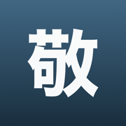

Formal Japanese for work
Coming to the App Store
Waiting for Apple review. This page describes the version submitted.
Knowing the form is not the same as knowing who to use it on. Too much keigo is a mistake exactly as much as too little – and that half is what nobody teaches.
The Japanese honorific register is not a list of forms to memorise. It is a decision about who you are talking to.
You can know that 伺う is the humble form of 行く and still aim it at a classmate one year above you. You can know お〜になる and use it about your own boss in front of a customer. The difference is not in the form – it is in who is speaking to whom. That is what Keigo asks about.
Register – who this form is right for.
Direction – whose action it is: yours or theirs.
Production – building the form from its parts.
Overdone keigo – recognizing that the politeness is one step too much.
You can pick the humble register flawlessly and consistently humble the wrong person. An app that averages those four numbers into one has no way to show you that. This one shows it.
二重敬語 and バイト敬語 – forms that sound polite and are wrong. They are heard every day and almost nobody corrects them. Here they are a question type of their own and a skill measured on its own.
A mistake has a direction. Using 伺う where いらっしゃる belongs is a different fault than the reverse, because the first lowers the other person and the second raises you. The app measures the two apart and says which way round you swap them.
Forms are built from parts. There is no text field, so a typo can never be mistaken for not knowing, and you do not need a Japanese keyboard at all.
Vocabulary comes back on a ladder of intervals, from a few hours to half a year. Patterns and rules have no due dates, and that is a decision rather than a gap: お〜になる should come out without thinking, and 内/外 is a judgment, not a fact that fades. You see one Today screen, one daily goal and one number; the difference sits in which questions come up.
The material ships inside the app. Your progress stays on the device and goes nowhere. There is no sign-in, no tracking and no advertising.
Levels 1 and 2 in full – です/ます and all twenty irregular forms. A single purchase opens levels 3 to 5: productive patterns, favors, 内/外 and overdone keigo. No subscription.
Keigo is the seventh app in the same family. Kaname teaches grammar, Katsuyokei conjugation, Joshi particles, Kazoekata counters, Bunmyaku reading in context, Kuzushi casual speech. Each one shows your progress in the others – with no account and without sending anything anywhere.
The category split and every contested call follow 文化庁「敬語の指針」(2007). Where business etiquette guides disagree with each other, the app says whose side it takes.
The description above is the same text that stands on the App Store product page – it comes from the same file.